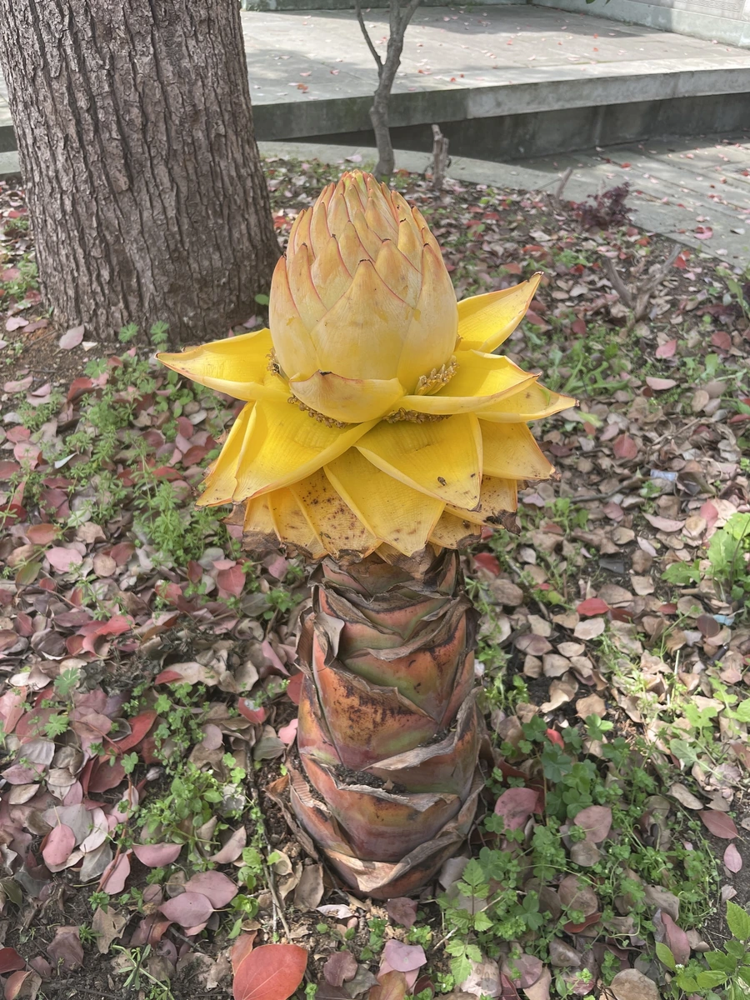

花卉与草本 · 植物界
地涌金莲 Musella lasiocarpa

芭蕉科地涌金莲属多年生草本，假茎粗壮、叶似芭蕉，金黄色花序从地面涌出如莲座，是中国特有的珍稀观赏植物。
- 分类
- 门被子植物门纲木兰纲目姜目科芭蕉科属地涌金莲属
- 栖息环境
- 海拔 1500–2500 米的干热河谷与山坡，喜阳光充足、排水良好
- 地理分布
- 中国云南西北部与四川西南部，为中国特有种
- 保护级别
- IUCN 暂无评估；中国特有种，野生种群因生境破坏而减少
物种志
地涌金莲为多年生丛生草本，高 0.6–1.5 米，具粗壮的根状茎，假茎由叶鞘层层包裹。叶片大，长椭圆形，长 0.5–1 米，形似芭蕉叶。花序生于假茎基部、贴近地面，苞片金黄色、层层展开如莲花，长 20–30 厘米，真正的花小、黄绿色，藏于苞片内；果实为浆果。
本种为中国特有种，分布于云南西北部与四川西南部的金沙江、澜沧江流域，生于海拔 1500–2500 米的干热河谷与山坡，喜阳光充足、排水良好的环境。它是云南少数民族传统的“五树六花”之一，傣族佛教寺院常种植，寓意吉祥。地涌金莲花期长达半年，金黄色花序从地面涌出，十分奇特；其假茎与花可入药，有止血之效。野生种群因生境破坏而减少，已受到保护。
形态与习性
- 株高0.6–1.5 米，假茎粗壮
- 花期3–10 月，花序金黄色
- 花序贴地而生，长 20–30 厘米，形似莲座
- 光照喜光，每天需充足直射光
- 水分耐旱，忌积水
- 土壤疏松肥沃、排水良好的沙质壤土
- 主要用途庭院观赏、佛教供花与药用
趣味知识
- 地涌金莲的花序从地面直接涌出，像一朵金色的莲花从地下升起，因此得名。
- 它是云南傣族佛教“五树六花”之一，常种在寺庙与村寨中。
- 地涌金莲的花期可长达半年，是花期最长的草本花卉之一。
- 它的假茎与花在民间入药，有收敛止血的作用。